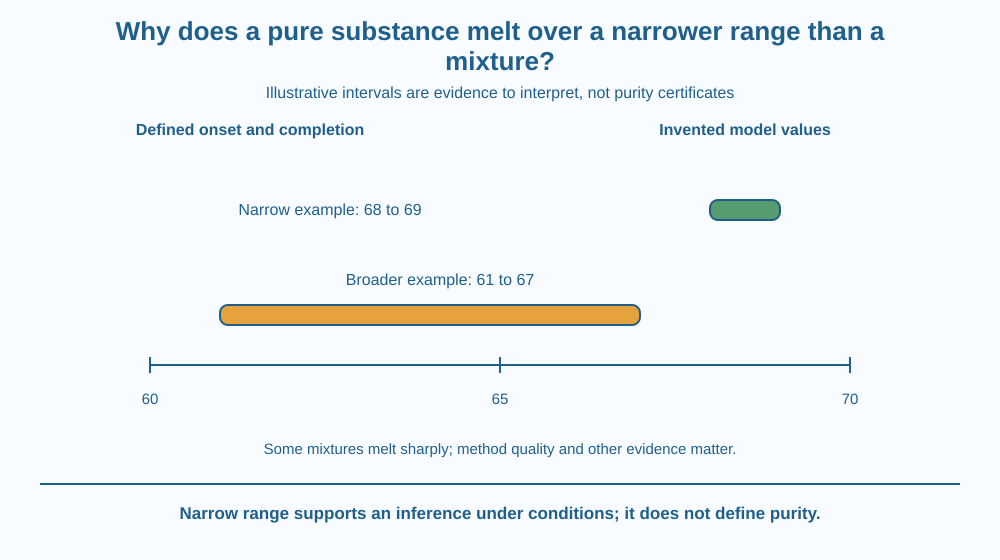

Explain why a narrow melting range can support a purity assessment under suitable conditions. Distinguish onset from completion of melting and recognise exceptions. Treat the result as evidence alongside method quality, not as a universal proof that a sample contains exactly one substance.
Two labelled laboratory samples begin as solids. In a supplied record, one melts across a narrow interval while the other begins earlier and finishes across a broader interval. Both eventually become liquid, but their transition records differ.
Why might composition affect that interval? A mixture can have solid and liquid phases with changing compositions as melting progresses. The observation is more informative than simply saying the sample got hot enough.
No actual heating is needed to investigate the evidence. We can interpret fictional records and examine what conclusions are justified.
For a pure substance in an appropriate stable form at a fixed pressure, equilibrium melting is associated with a characteristic temperature. Real apparatus observes a range because heating, sample size, temperature gradients and reading conventions are not perfectly ideal.
A practical melting range often runs from the first clear sign of liquid to the disappearance of the last solid. The record should state its convention. Different observers using different endpoints may report different ranges for the same process.
Many soluble impurities can lower the onset and broaden the observed range. The liquid and remaining solid need not keep the original overall composition throughout melting. As one part melts, the composition of the phases can change.
This is why a lower, broader interval can be a useful sign of impurity in an appropriate comparison. It is not a rule that every possible impurity produces the same effect or that every mixture must melt broadly.
Some mixtures near a eutectic composition can melt sharply. A narrow range can therefore occur without complete chemical purity. This exception matters because it prevents the convenient shortcut from becoming a false definition.
Different solid forms, decomposition and unsuitable measurement conditions can also complicate interpretation. A sample that changes chemically before completing a clean melt cannot be analysed with a simple phase-transition rule alone.
Method quality matters. Heating too quickly can create a mismatch between the sample's actual condition and the reported temperature. Packing, crystal size and instrument calibration can influence a practical record. Careful arithmetic cannot repair an uncontrolled heating method.
The lesson differs from identifying melting versus dissolving or growing salt crystals. Its question is how a measured transition range can provide limited evidence about composition. We do not identify unknown substances or claim a classroom record certifies a product's safety.
Draw a temperature line with two markers for each sample: onset and completion. Shade the interval between them. Compare both the width and location rather than considering only the final temperature.
Add a separate method box for pressure, heating procedure and endpoint definition. This shows that the range belongs to a sample measured under conditions, not to a label alone.
Finally draw an exception card marked sharp-melting mixture. Keep it beside the general pattern rather than hiding it. A useful scientific indicator becomes more reliable when the user knows where the inference can fail and what other evidence is needed.
The SVG shows two invented temperature intervals, one narrow and one broader and lower. Each interval has separately labelled onset and completion markers. The values are fictional and do not refer to a real chemical.
An exception panel identifies a possible sharply melting mixture. A method panel lists heating and observation conditions as additional influences. The diagram therefore supports a cautious comparison rather than a one-number purity certificate.
No heater, flame or unknown chemical handling appears in the activity. The visual is an evidence-reading exercise designed to separate a useful trend from a universal law.

Laboratories can use melting behaviour as one part of characterising suitable solid substances. Interpretation depends on knowing the method and combining the observation with other information.
Household materials such as wax or chocolate can be complex mixtures with structural changes that do not fit a simple pure-compound example. They should not be treated as interchangeable reference substances merely because they soften when warmed.
Students should not heat unknown powders, medicines or household chemicals to test purity. A supplied record can teach the principle without exposure to hot equipment, vapours or substances whose hazards are not known.
Use paper, a ruler and fictional data only.
Label every value invented. Do not name an actual substance from these numbers. Add an exception note that some mixtures can melt sharply. The exercise is about evidence strength, not a home purity analysis or a test of food and medicine quality.
Why would rapid heating make a practical range harder to interpret even if the temperature display has many decimal places? Consider whether the sample and sensor represent the same conditions at the same moment.
Now imagine a narrow range matching a reference. What additional possibilities prevent that agreement from proving complete purity? Include measurement limits and the sharply melting mixture exception.
What does a practical melting range record?
Answer: A — The onset and completion convention defines the observed transition interval.
Why is narrow melting not a universal proof of purity?
Answer: C — A sharply melting eutectic mixture is one important exception to the simple inference.
A sample is heated too rapidly. What should a report consider?
Answer: B — The sample and measured temperature may not remain closely matched under rapid heating.
Write a cautious laboratory-style comparison using the invented intervals. State what was observed before suggesting impurity as one explanation. Include the endpoint convention and at least two method conditions.
Your conclusion must avoid saying narrow means certainly pure. Add one exception and one further evidence need. Keep the work on paper, with no recommendation to heat an unknown real sample.
An indicator can be useful without being a definition. A narrow range may support a purity interpretation under appropriate conditions, while exceptions prevent it from proving the whole claim alone. Knowing the exception improves the tool because it guides the next question rather than encouraging overconfidence.
A narrow melting range can support purity evidence, but composition exceptions and measurement conditions mean it is not a stand-alone proof of a pure substance.